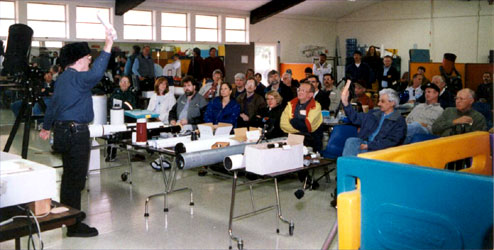

The SJAA/Bay-area Auction was a great success! With the auction run first, there was much more material than in years past, and it took longer - about 3 hours. The results were worth the work, however, as the net income was $993.35 - better than most years.
The swap meet was sharply different! One of our biggest sellers was absent, and with much already sold, the swap was almost non-existent! There was another $41.15, and, with the dollars from bidder numbers and some donations, the overall total is $1054.35.
Jay Reynolds Freeman conducted the auction in his uninimitable style; a big thank-you to Jay.
We must also thank Scope City for the filters, books, and charts that were donated; they brought in $192. Thank You, Scope City!
|  |
|
|